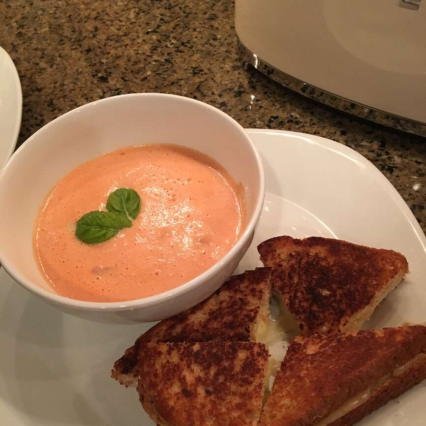

Tomato soup

Man's favourite soup
This is the creamiest tomato soup I have ever had.
Ingredients
- 1 (29 ounce) can diced tomatoes
- 1 (10.5 ounce) can condensed chicken broth, undiluted
- 2 tablespoons butter
- 2 tablespoons white sugar
- 1 tablespoon chopped onion
- ¼ teaspoon baking soda
- 2 cups heavy whipping cream
Steps
- In a large stock pot, combine tomatoes, chicken broth, butter, sugar, onion, and baking soda. Bring to a boil over medium-high heat; reduce heat to low and simmer for 1 hour.
- Stir in cream; cook until heated through and serve.